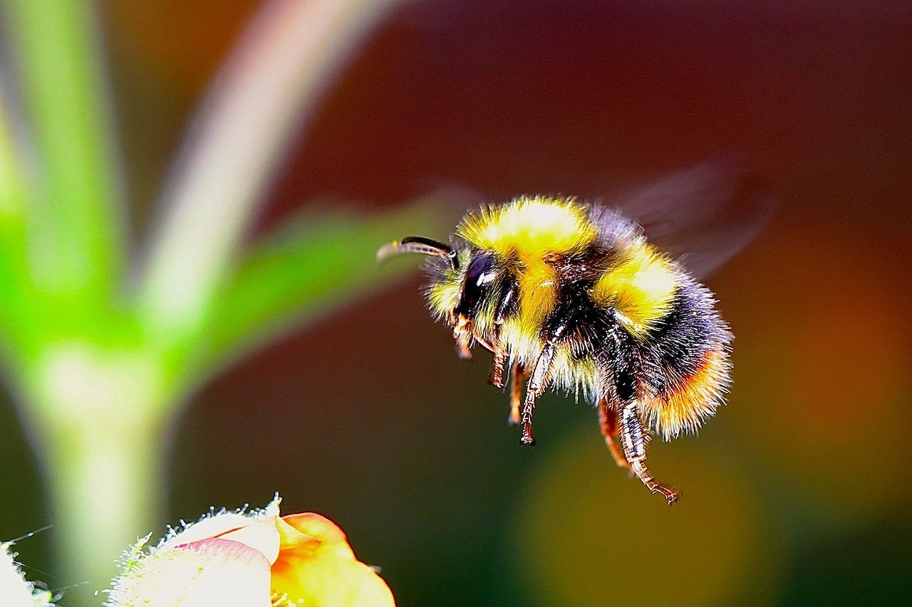

Image by Josef Pichler from Pixabay
Journey in Web Design and Bee Conservation
This site was created by Morgan Olson using concepts learned in the BATECH 189 class on HTML and CSS. I designed this site to inform my audience about the ongoing need to protect bees. While recent articles suggest that bee populations are recovering, this progress is due to the efforts of concerned individuals like you and me. Please visit the resources page to learn how you can contribute further to this important cause.